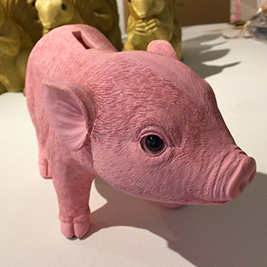

Find Us
Come and visit our gorgeous emporium of unusual, eclectic delights. Mixing vintage, new and hand made, we're right in the heart of beautiful, creative Shrewsbury. Located in historic Milk Street, just off High Street at the top of Wyle Cop, we're part of the town's thriving "independent quarter" that welcomes visitors to the town.
Opening Hours
Tuesday - Saturday 10am - 5pm
Sunday & Monday Sometimes
Get In Contact
Email - sarah@fifihomeinteriors.co.uk
Phone - 01743 242 254